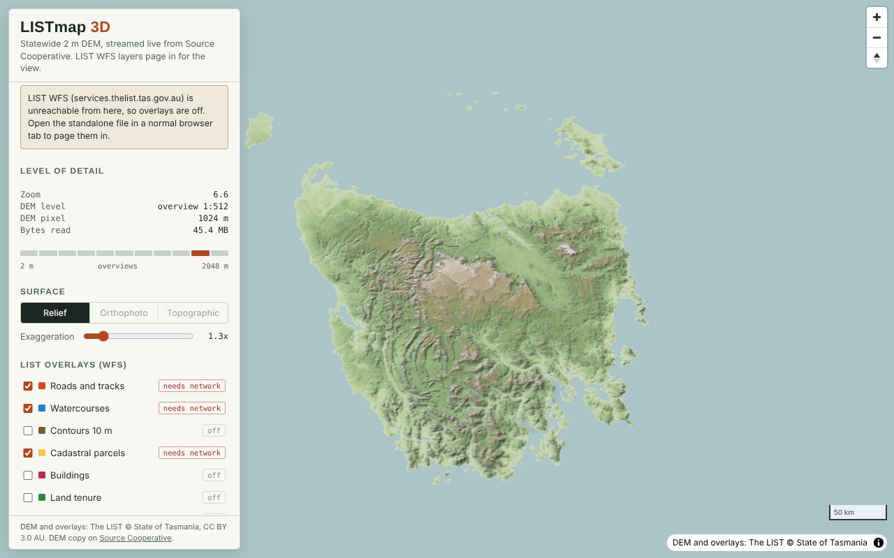
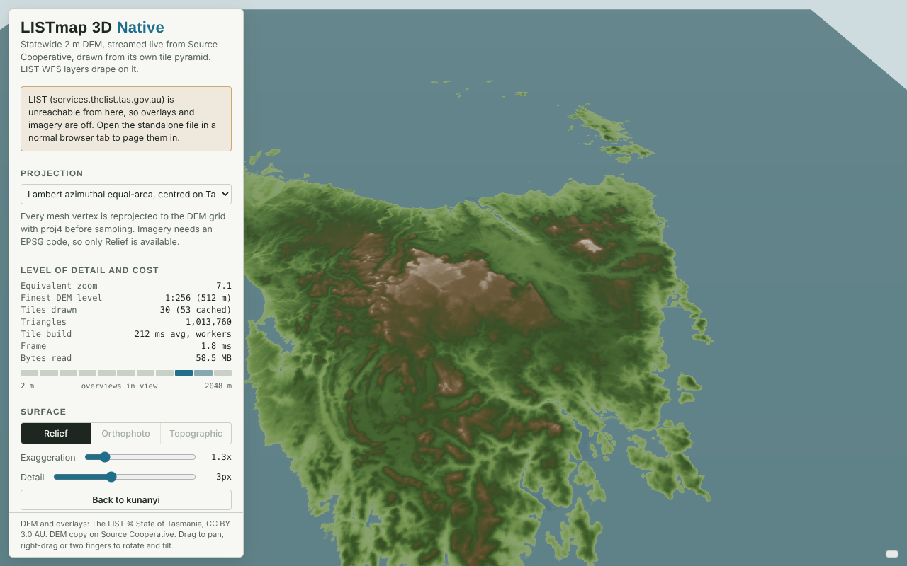

listmap3d
The Tasmania 2 m DEM in 3D, streamed straight from its cloud-optimised GeoTIFF, with LIST open data WFS layers paged in for the view. Two viewers, same data.

LISTmap 3D MapLibre
MapLibre GL terrain in Web Mercator. Tiles are resampled from the COG on the fly; LIST basemap tiles for imagery.
Open viewer
LISTmap 3D Native
three.js meshes in the projection of your choice, cut from the COG's own grid in MGA55. Overlays drawn into each tile.
Open viewer